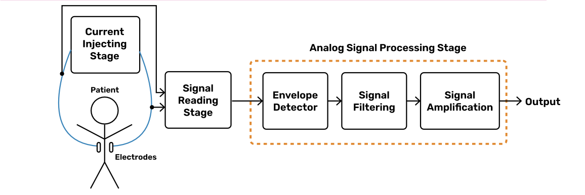
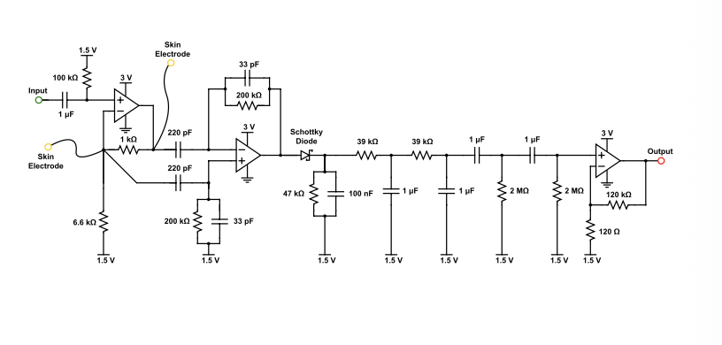
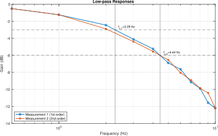
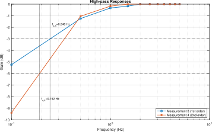
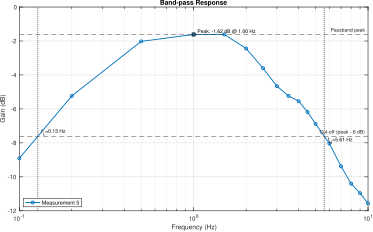
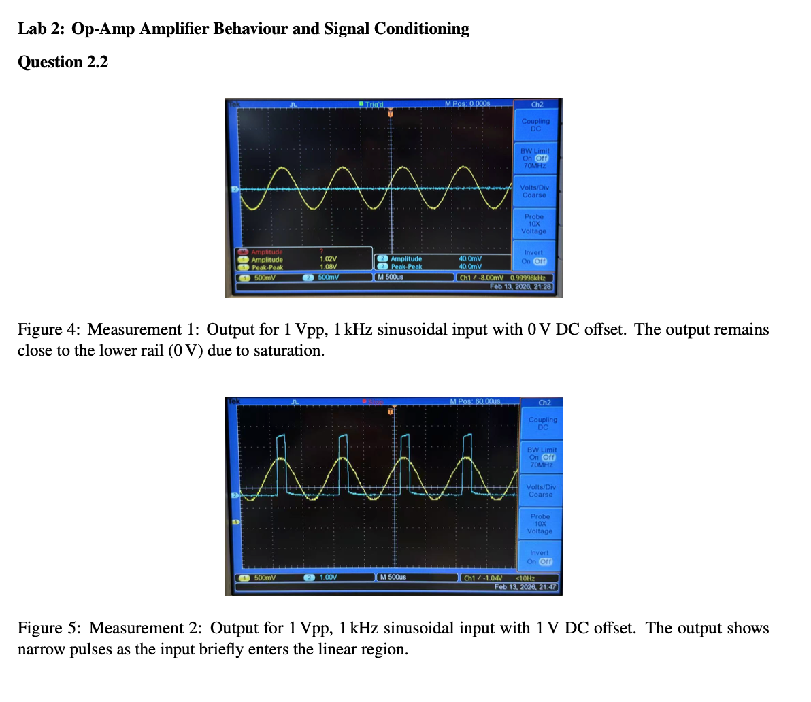
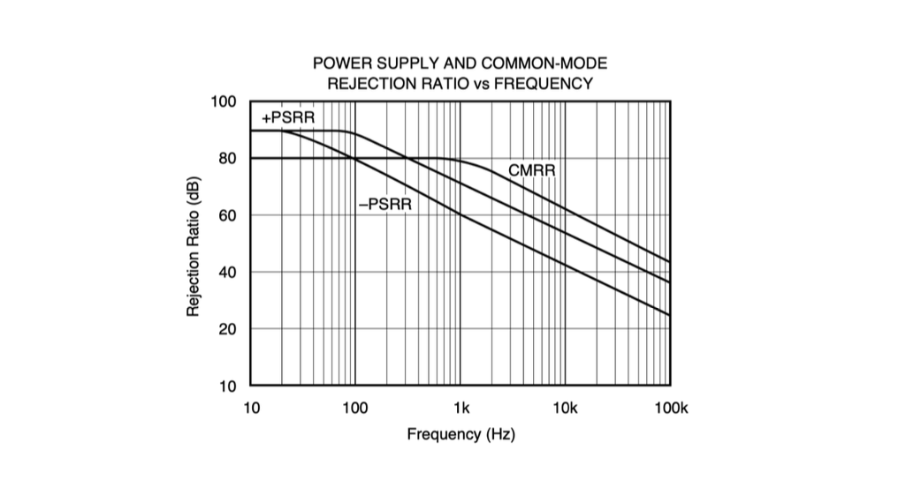

Analogue biomedical instrumentation
Electronic stethoscope and impedance respirometry, from signal conditioning to bench measurements.

The research question
How can analogue circuits recover acoustic and respiratory signals from different sensor inputs?
I worked on a microphone-based stethoscope and a carrier-based respiratory circuit, examining their signal-conditioning behaviour in the laboratory.
Two front ends, different measurements

Acoustic pathway
The stethoscope uses two LM324 inverting stages, frequency-selective filtering and an indicator branch. It was built as a pair project with Zihao Tan.
Impedance pathway
The respiratory circuit combines a carrier, differential readout, diode envelope detection and low-frequency conditioning. My laboratory report analyses its integrated operation.
Laboratory measurements and implementation
Laboratory filter characterisation
These passive-filter measurements concern low-frequency signal conditioning. They are separate from the stethoscope’s designed 20–500 Hz audio passband.



Amplifier operating limits and rejection


Electronic stethoscope
Zihao Tan and I built an electronic stethoscope using two LM324 inverting stages with nominal gains of 100× and 37× and a designed 20–500 Hz passband. Measurements confirmed approximately 100× gain in the first stage. Noise limited the second-stage measurement, so the nominal product of 3,700× remains a design value rather than a measured end-to-end gain.
Impedance respirometry
The respiratory circuit used 32 kHz excitation, differential readout, Schottky-diode envelope detection, RC filtering and amplification. A stripboard implementation recovered a waveform from a breathing simulator set to 30 breaths per minute. This supports successful signal recovery at that simulator setting. Further tests across known breathing rates would be needed to quantify accuracy and repeatability.
Project scope
What the measurements leave open
The two builds show why component-level behaviour and complete-system performance need separate checks. Noise limited the stethoscope gain measurement, while the respiratory result was obtained from a simulator at one reported setting. Repeated gain-versus-frequency measurements and respiratory tests across known rates would be needed to quantify accuracy and repeatability. Both circuits demonstrated signal recovery in the laboratory.